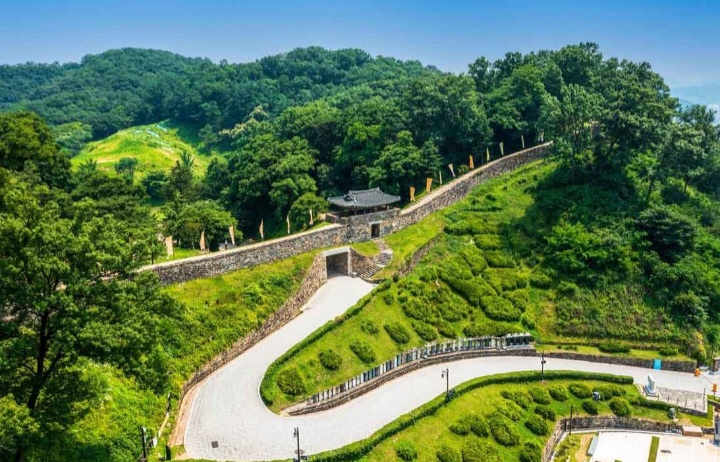

대한민국은 오랜 전통과 현대적인 문화가 공존하는 나라입니다.
궁궐과 한옥 같은 역사 유산부터 활기찬 도시와 아름다운 자연까지 다양한 매력을 지니고 있습니다.
대한민국의 다양한 지역을 살펴보고 각 지역의 매력을 만나보세요.


서울은 대한민국의 수도로 전통과 현대가 공존하는 도시입니다. 경복궁과 창덕궁 같은 궁궐과 북촌 한옥마을을 둘러보며 역사와 문화를 느낄 수 있고, 명동과 강남 등 현대적인 쇼핑 거리와 문화 공간도 즐길 수 있습니다. 한강의 아름다운 풍경과 야경은 여행객들에게 큰 매력을 선사합니다. '서울'이라는 이름은 조선 시대 한양을 뜻하는 순우리말에서 유래했습니다.

경기도는 서울을 둘러싼 수도권 지역으로 역사와 자연, 현대적인 관광지가 조화를 이루는 곳입니다. 수원 화성과 한국민속촌 같은 전통 체험, 에버랜드와 아침고요수목원 같은 현대 관광도 즐길 수 있습니다. 가족 여행과 문화 체험에 최적화된 지역입니다. '경기'라는 이름은 서울 주변 지역이라는 뜻에서 유래했습니다.

대한민국 동북쪽에 위치한 강원도는 태백산맥의 웅장한 산세와 에메랄드빛 동해가 어우러진 천혜의 자연을 가진 지역입니다. 설악산과 오대산의 단풍, 겨울이면 은빛 설국으로
변신하는 대관령 양떼목장, 탁 트인 해안선의 강릉과 속초 푸른 바다가 지친 마음을 치유합니다. 사계절 다른 매력을 뽐내는 강원도의 자연 속에서 힐링을 경험할 수
있습니다.
'강원'이라는 이름은 이 지역의 핵심 거점인 '강릉'과 '원주'의 앞 글자를 따서 지어졌습니다.

충청도는 대한민국 중심부에 위치한 역사와 자연의 조화로운 지역입니다. 백제 시대 유적과 공주 공산성에서 전통 문화를 체험하고, 태안 해안국립공원과 속리산의 자연 풍경을 즐길 수 있습니다. 사계절마다 색다른 매력을 가진 충청도는 여행객에게 평화로운 시간을 선사합니다. '충청'이라는 이름은 이 지역의 핵심 거점인 '충주'와 '청주'의 앞 글자를 따서 지어졌습니다.

경상도는 대한민국 동남부에 위치하여 낙동강 줄기를 따라 기름진 평야와 수려한 해안선을 동시에 품고 있는 역동적인 지역입니다. 찬란한 신라 천 년의 문화를 간직한 경주부터 현대 산업과 해양 문화의 중심지인 부산과 울산까지, 과거와 현대가 가장 강렬하게 공조하며 독특한 에너지와 다채로운 볼거리를 선사하는 곳입니다. '경상'이라는 이름은 이 지역의 핵심 거점인 '경주'와 '상주'의 앞 글자를 따서 지어졌습니다.

대한민국 서남부에 위치한 전라도는 드넓은 호남평야가 어우러진 풍요로운 땅으로, 예로부터 '예향'과 '미식'의 고장이라 불릴 만큼 깊은 예술적 정취와 독보적인 음식 문화를 자랑합니다. 전주 한옥마을의 전통적인 멋부터 여부 밤바다의 낭만까지, 한국 고유의 서정적인 풍경과 따뜻한 정을 온전히 느낄 수 있는 매력적인 곳입니다. '전라'라는 이름은 이 지역의 핵심 거점인 '전주'와 '나주'의 앞 글자를 따서 지어졌습니다.

제주도는 남쪽의 화산섬으로, 한라산과 오름, 용암 동굴, 에메랄드빛 해변 등 독특한 자연 환경을 자랑합니다. 성산일출봉, 천지연 폭포, 협재 해수욕장과 우도 등 사계절 관광 명소가 여행객을 맞이하며, 제주의 음식과 문화 체험까지 더해져 기억에 남는 여행을 완성합니다. 바람과 파도, 산과 들이 만드는 풍경 속에서 힐링과 감동을 동시에 느낄 수 있습니다. '제주'라는 이름은 섬 전체를 가리키는 고유 지명에서 유래했습니다.